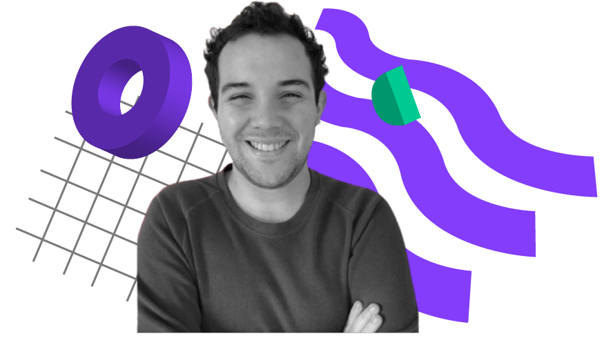
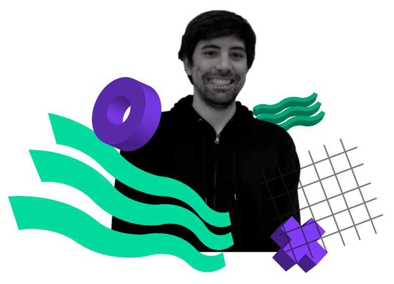

Quienes somos
Ivan mazorco
Conductor
Quiero ser periodista desde que tengo memoria e intento serlo todos los días. Primero soñamos en grande, después vemos como conseguirlo. Escribo para el diario La Nación y los lunes conduzco por acá. Si me preguntás, me hubiera gustado tener 20 en 1980 pero todo en la vida no se puede.



Diego Flores Depietri
Viaja Sentado
Hola! Soy licenciado en Comunicación Periodística en la UCA y actualmente trabajo en Vía Tandil - grupo Clarín. Me apasiona la tv y la radio, y loco por las curiosidades y los viajes. En Cerrado los Lunes te llevo a recorrer el mundo en mi columna "Viajá Sentado", en donde conocemos lugares únicos que tienen una historia para contar.

Maite Marconi
Productora
Soy la productora del programa y amo la radio desde el secundario pero tengo pánico al vivo. Siempre vas a estar en contacto conmigo aunque no lo sepas ya que me encargo de las redes y el aire. Entre nos, no soy productora, soy diseñadora multimedia y ux/ui pero mi lado mandona puede mimetizarse con la producción y hacer de cerrado los lunes el mejor programa para tus mediodías.


Tamara zarate
Productora
Estudié Periodismo porque quería saber de todo un poco y no me decidía, y esta carrera me concedió ese deseo. Soy profesora adscripta en mi antigua universidad (UCA) y productora de Cerrado los lunes y Radiofónicos en vivo! Cuando no estoy trabajando o pensando en trabajo, me gusta desconectarme, aunque en esta profesión ese hobby es un poco complicado.
Juan Diego Carbajales
Creative Content
Hola! Me dicen Juandi. Soy diseñador de imagen y sonido, editor de video y detractor de la pizza con ananá.
Desde chico me interesa todo lo relacionado al mundo audiovisual, sobre todo lo referido al área de posproducción, aunque disfruto de todo el proceso de realización, me parece mágico poder tener una idea y darle vida.
